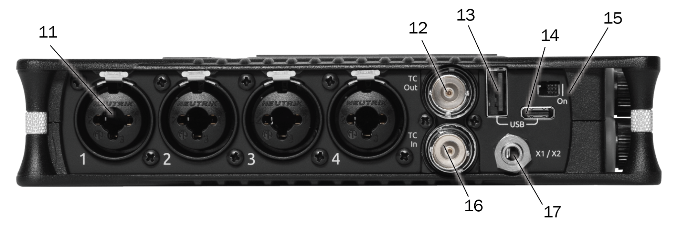
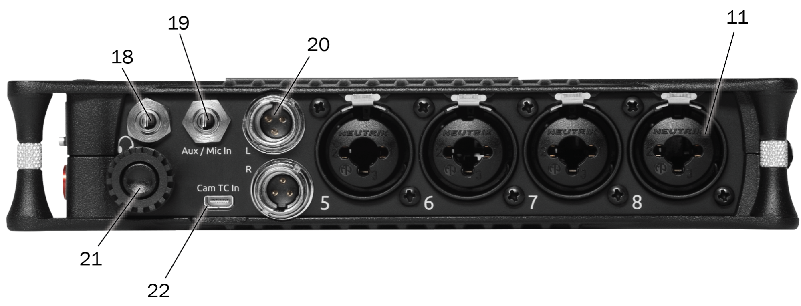
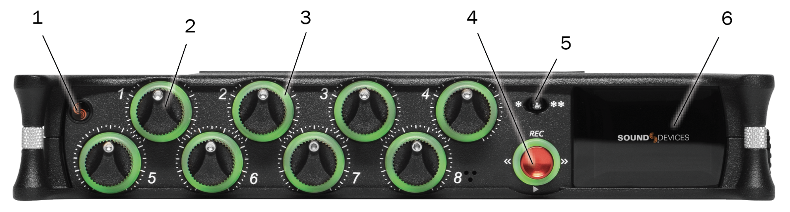
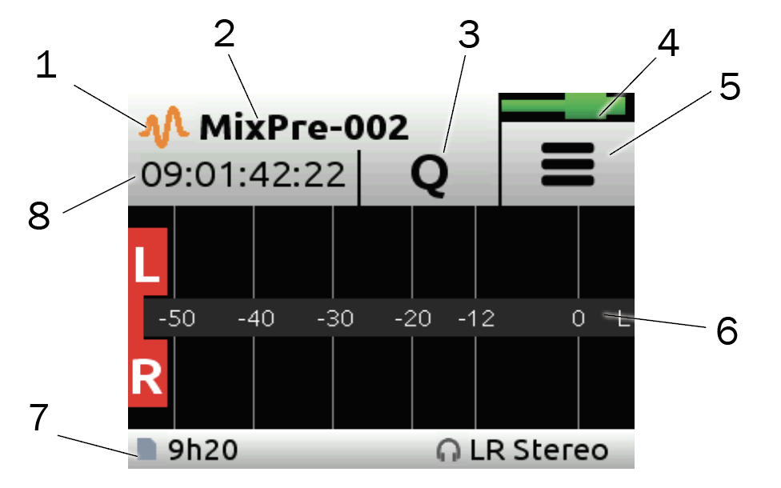
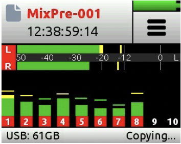
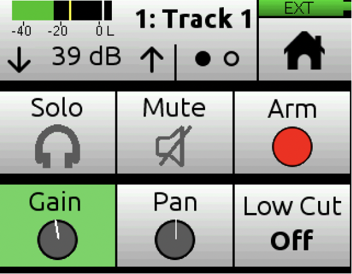
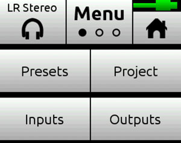
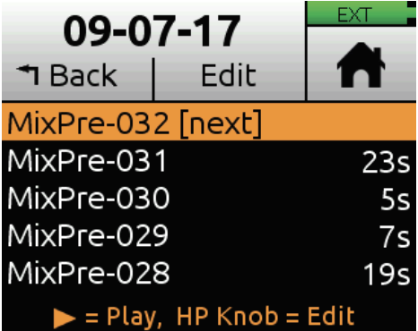

This website will briefly go over everything you need to start the podcast
Click on a tab to open the info that you might need
Setting up the Equipment
Taking everything out
This list will be pretty short since there isn't much to make sure of what you have on hand
A list of things that should be taken out are:
MixPre10
Microphones
Do not disturb sign
If you are recording for the podcast, make sure to have a release form printed out for the guest to sign
MixPre10 setup
Since the microphones and cables are numbered, just be sure to connect them to the numbered ports
The power on switch is numbered 15 on the image

left side of the MixPre10
You should also remember to connect the dongle to the headphone port
On the image, it should be numbered 18

right side of the MixPre10
Configuring the MixPre10
Adjusting the knobs
After powering on the MixPre10 the indicator should be red and the screen should turn on
The indicator is numbered 1

front of the MixPre10
When moving the numbered knobs, the screen should tell you what level they are at
the levels should be around 48 to 52. This is depending on how loud or low the speaker is
Arming the Mics
A very important step is to make sure that the mics are ARMED
To check if a microphone is armed, you can tap on the screen and see if the numbers are red

MixPre10 screen

MixPre10 screen after tap
if they are not red, then be sure to tap the numbered knob to Arm the mic
A new screen should pop up, then click on ARM
This is to ensure that a seperate mono file is created for that microphone

MixPre10 knob screen
Feedback from mics
When speaking into the mic, the numbered knobs should turn green
If they are not turning green, make sure the mic is turned on and correctly connected to the MixPre10
Adjusting headphone grain
Another thing to check is the headphone grain level in case it's too loud or too low
move the knob numbers 21 on the image until the screen tells you the headphone grain level is 72
I chose the number 72 because it seems to be not too loud and not too low
right side of the MixPre10
Setting up projects
To set up a new project, you have to click on the hamburger menu which is numbered 5
Then click on projects
then be sure to click on NEW and then click DATE
since it's easier to know by date than by name
MixPre10 screen

MixPre10 menu screen
After that, you can change the name of the file by going back to home
Then click on the title of the project on the MixPre10 screen, it is numbered 2
You can click on edit, and then choose a new name for your project
To choose a letter you have to use the headphone knob. To select a letter, push in the knob

MixPre10 filename change screen
Recording a project
to begin recording, move the red knob up (it is numbered 4)
You should hear a beep once you start, and the light should come out of the red knob
to stop recording, just push the red knob, and you will hear another sound along with the light turning off around the knob
MixPre10 front
Some to listen to what you recorded on the MixPre10, you can push the knob down to play the recording.
To stop listening, just push on the red knob again
Exporting your project
Entering transfer mode
Once you finished recording the podcast, click on the hamburger icon to go to the menu
Then click on Menu text to go to the next screen
Finally, click on file transfer mode
The screen should then say it's in file transfer mode
Menu screenTransfer screen
Transferring to your computer
You need a USB-A or USB-C cable to continue to this part
Connect the USB-c cable to the port numbered 13 or 14
Then connect it to your computer
Left of MixPre10
The MixPre10 should show up like if it was a USB or a drive
Navigate through your filesystem, find the date of the project
Then make sure you COPY the file to wherever you please
Once you are finished copying, eject the MixPre10 and then cancel the FileTransfer mode